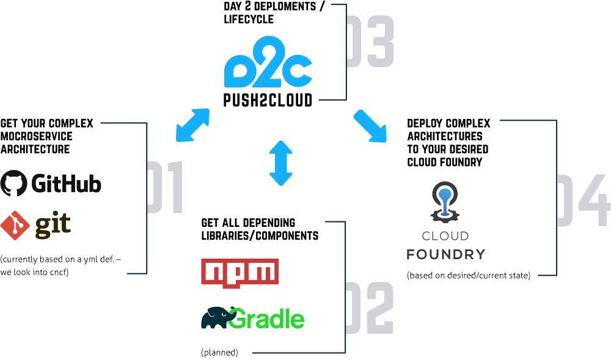

push2cloud is a framework that allows you to easily deploy complex cloud native microservice applications onto Cloud Foundry. If you’ve a complex microservice architecture, push2cloud is your framework to speed up your deployments significantely! push2cloud consists of multiple pluggable components that work together to give maximum customizability to the user and use-case.
Sophisticated application configuration supporting dependencies and versioning
Release- /Deployment management
Target platform agnostic, supporting multiple environments
Provides flexible, customizable workflow framework
Extendable through plugin structure
Easy to integrate in CI/CD pipelines
Open source
The basic push2cloud architecture consists of manifests, the compiler to process them and various workflows to deploy.
A complete overview of the architecture can be found here.
# get push2cloud
git clone https://github.com/push2cloud/push2cloud.git
cd push2cloud/example/deployer
npm install
# install the cli
npm install -g push2cloud-cli
# set your CF target (api, space, org)
vi ../manifests/deployment.json
# set your CF credentials
export CF_USER=${YOUR_USER}
export CF_PWD=${YOUR_PASSWORD}
# compile
p2c compile -e ../manifests/deployment.json
# deploy
p2c exec ./node_modules/push2cloud-cf-workflows/simple.jsLonger and commented version available here. Further guides available here.
This more advanced example shows how to migrate applications without downtime using a blue-green deployment.
const blueGreen = (deploymentConfig, api, log) =>
waterfall(
[ init(deploymentConfig, api, log)
, map(packageApp, missing.apps)
, mapSeries(api.createServiceInstance, missing.services)
, map(api.createRoute, missing.routes)
, map(api.createApp, missing.apps)
, mapLimit(api.uploadApp, missing.apps)
, map(api.setEnv, missing.envVars)
, map(api.stageApp, missing.apps)
, map(api.bindService, missing.serviceBindings)
, map(api.startAppAndWaitForInstances, missing.apps)
, map(switchRoutes(api), combine('desired.routes', old.associatedRoutes, (r) => (r.unversionedName + r.hostname + r.domain)))
, map(api.stopApp, old.apps)
, map(api.unbindService, old.serviceBindings)
, map(api.deleteApp, old.apps)
]
);This quick demo shows you the initial deployent of the demo app and a blue-green deployment after a few changes.